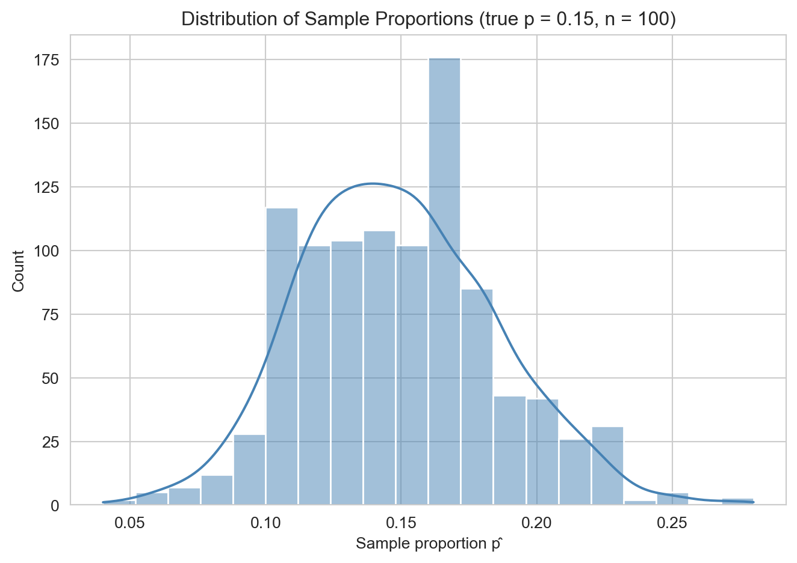
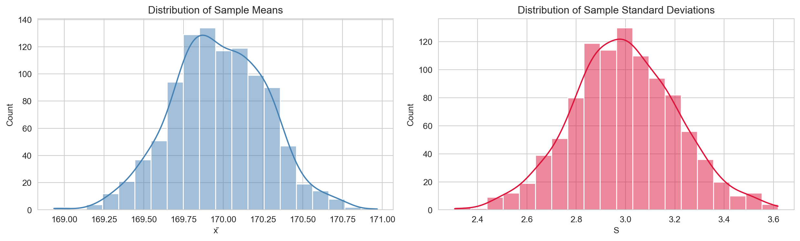
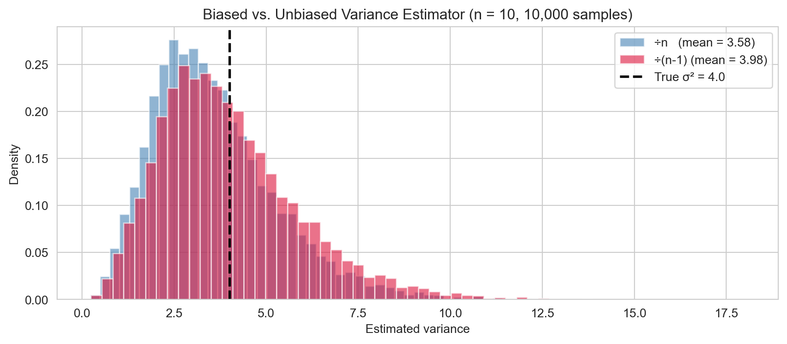
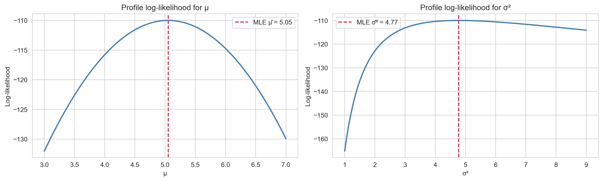
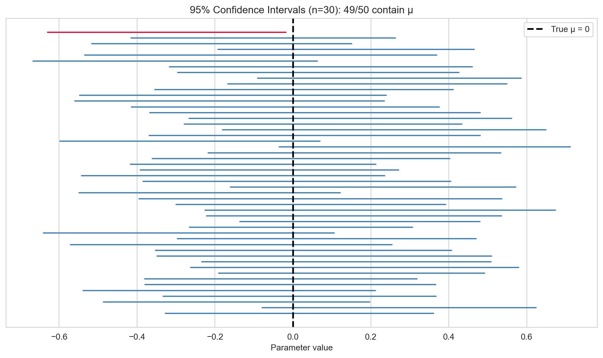
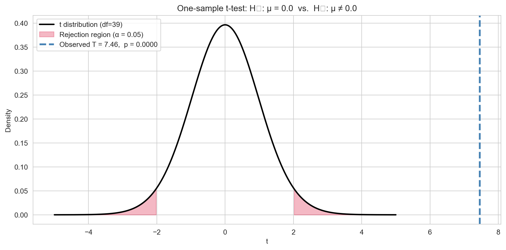

Libraries and Styling
import numpy as np
import matplotlib.pyplot as plt
import seaborn as sns
from scipy import stats
from scipy.stats import norm, t, binom
sns.set_style('whitegrid')
sns.set_palette('Set2')John Robin Inston
May 15, 2026
May 22, 2026
Statistical inference is the process of drawing conclusions about an unknown population from a sample of observed data, while rigorously accounting for uncertainty.
The core problem is simple: we want to know something about a large population (all voters, all patients), but we cannot observe it in its entirety — we only have a sample. We must therefore reason from the sample to the population, quantifying how uncertain our conclusions are.
There are two main branches of statistical inference. Frequentist inference treats unknown parameters as fixed constants and interprets probability as the long-run frequency of events. Bayesian inference treats parameters as random variables with prior distributions that are updated by the data.
A population is the complete set of units we are interested in. A sample is a subset of the population that we actually observe.
A parameter is a numerical characteristic of the population — it is fixed but unknown. Common examples are the population mean \(\mu\), population variance \(\sigma^2\), and proportion \(p\). A statistic is a numerical function of the sample — it is observed and used to estimate parameters. Common examples are the sample mean \(\bar{x}\), sample variance \(s^2\), and sample proportion \(\hat{p}\). The goal of inference is to use a statistic, computed from data, to estimate or test claims about the unknown parameter.
Suppose we want to determine the proportion of cats that have Feline Immunodeficiency Virus (FIV). We cannot examine the entire cat population to find the true proportion \(p\), so we model each cat as an independent Bernoulli random variable with unknown success probability \(p\) and take a sample of \(n = 100\) cats. The sample proportion \(\hat{p}\) is our statistic — we use hat notation to denote parameter estimates.
Because the sample is drawn randomly from the population, any statistic computed from it is a random variable. A different sample would produce a different value of the statistic. This sampling variability is precisely what we need to quantify to make valid inferences.
We can visualise this variability by simulating many samples and examining the distribution of the resulting statistics.
sample_proportions = [generate_cat_sample().mean() for _ in range(1000)]
sns.histplot(sample_proportions, bins=20, kde=True, color='steelblue')
plt.xlabel("Sample proportion p̂")
plt.ylabel("Count")
plt.title("Distribution of Sample Proportions (true p = 0.15, n = 100)")
plt.tight_layout()
plt.show()
As a second example, consider estimating the average height of members of the Santa Barbara pool league. We assume heights are normally distributed with unknown mean \(\mu\) and standard deviation \(\sigma\), collect a sample of players, and compute \(\bar{X} \approx \mu\) and \(S \approx \sigma\). The simulation below uses a true mean of 170 cm and \(\sigma = 3\).
fig, axes = plt.subplots(1, 2, figsize=(13, 4))
sns.histplot(sample_means, bins=20, kde=True, color='steelblue', ax=axes[0])
axes[0].set_title("Distribution of Sample Means")
axes[0].set_xlabel("x̄")
sns.histplot(sample_sdvs, bins=20, kde=True, color='crimson', ax=axes[1])
axes[1].set_title("Distribution of Sample Standard Deviations")
axes[1].set_xlabel("S")
plt.tight_layout()
plt.show()
Both statistics vary across samples, but the sample mean follows an approximately normal shape — a consequence of the Central Limit Theorem discussed below.
The sampling distribution of a statistic is the probability distribution of that statistic over all possible samples of a given size \(n\) from the population.
For a population with mean \(\mu\) and variance \(\sigma^2\), the sample mean \(\bar{X} = \frac{1}{n}\sum_{i=1}^n X_i\) has the following properties: \[\mathbb{E}[\bar{X}] = \mu, \qquad \text{Var}(\bar{X}) = \frac{\sigma^2}{n}.\]
The standard error (SE) of \(\bar{X}\) is \(\text{SE}(\bar{X}) = \sigma / \sqrt{n}\) — the standard deviation of the sampling distribution. As \(n \to \infty\), the SE shrinks, meaning larger samples produce more precise estimates.
Let \(X_1, X_2, \ldots, X_n\) be i.i.d. random variables with mean \(\mu\) and finite variance \(\sigma^2\). Then as \(n \to \infty\): \[\frac{\bar{X} - \mu}{\sigma / \sqrt{n}} \xrightarrow{d} \mathcal{N}(0, 1).\]
The CLT is the most important theorem in statistics. It says that regardless of the shape of the population distribution, the sample mean is approximately normally distributed for large \(n\). A common rule of thumb is that the approximation is reliable for \(n \geq 30\), though this depends on the skewness of the population. The CLT justifies applying normal-based inference to a huge variety of real-world data — this is precisely why the heights simulation above produced a bell-shaped distribution of sample means.
An estimator \(\hat{\theta}\) is a function of the sample used to estimate a population parameter \(\theta\). An estimate is the specific value of the estimator computed from an observed sample.
The most common estimators are:
| Parameter | Estimator | Formula |
|---|---|---|
| Mean \(\mu\) | Sample mean | \(\bar{X} = \frac{1}{n}\sum X_i\) |
| Variance \(\sigma^2\) | Sample variance | \(S^2 = \frac{1}{n-1}\sum(X_i - \bar{X})^2\) |
| Proportion \(p\) | Sample proportion | \(\hat{p} = \frac{\text{successes}}{n}\) |
How do we judge whether an estimator is good? Two key criteria are bias and mean squared error.
The bias of an estimator \(\hat{\theta}\) is: \[\text{Bias}(\hat{\theta}) = \mathbb{E}[\hat{\theta}] - \theta.\] An estimator is unbiased if \(\text{Bias}(\hat{\theta}) = 0\).
The mean squared error (MSE) combines bias and variance into a single criterion: \[\text{MSE}(\hat{\theta}) = \mathbb{E}\!\left[(\hat{\theta} - \theta)^2\right] = \text{Var}(\hat{\theta}) + \left[\text{Bias}(\hat{\theta})\right]^2.\]
This decomposition reveals the bias-variance trade-off: a low-bias, high-variance estimator is accurate on average but erratic across samples; a high-bias, low-variance estimator is consistently wrong but predictably so. Good estimators minimise MSE by balancing both.
The naive estimator \(\tilde{S}^2 = \frac{1}{n}\sum(X_i - \bar{X})^2\) is biased: \(\mathbb{E}[\tilde{S}^2] = \frac{n-1}{n}\sigma^2\). Dividing by \(n-1\) instead corrects this bias: \[\mathbb{E}[S^2] = \sigma^2.\] The factor \(n-1\) is called the degrees of freedom — we lose one degree of freedom because \(\bar{X}\) is estimated from the same data, imposing one linear constraint on the residuals \(X_i - \bar{X}\).
rng = np.random.default_rng(7)
true_var = 4.0
biased, unbiased = [], []
for _ in range(10_000):
x = rng.normal(0, np.sqrt(true_var), size=10)
biased.append(np.var(x, ddof=0))
unbiased.append(np.var(x, ddof=1))
fig, ax = plt.subplots(figsize=(9, 4))
ax.hist(biased, bins=60, alpha=0.6, density=True,
label=f'÷n (mean = {np.mean(biased):.2f})', color='steelblue')
ax.hist(unbiased, bins=60, alpha=0.6, density=True,
label=f'÷(n-1) (mean = {np.mean(unbiased):.2f})', color='crimson')
ax.axvline(true_var, color='black', lw=2, linestyle='--', label=f'True σ² = {true_var}')
ax.set_xlabel('Estimated variance')
ax.set_ylabel('Density')
ax.set_title('Biased vs. Unbiased Variance Estimator (n = 10, 10,000 samples)')
ax.legend()
plt.tight_layout()
plt.show()
The biased estimator consistently underestimates \(\sigma^2\), while the unbiased estimator centres on the true value.
Given data \(x_1, \ldots, x_n\) assumed i.i.d. from a distribution with parameter \(\theta\), the likelihood is: \[L(\theta) = \prod_{i=1}^n f(x_i;\, \theta).\] The log-likelihood \(\ell(\theta) = \sum_{i=1}^n \log f(x_i;\, \theta)\) is typically easier to maximise.
The maximum likelihood estimator (MLE) is: \[\hat{\theta}_{\text{MLE}} = \arg\max_\theta\, \ell(\theta).\] The MLE is the parameter value that makes the observed data most probable. MLEs are generally consistent (they converge to the true value as \(n \to \infty\)) and asymptotically normal.
For data \(x_1, \ldots, x_n \sim \mathcal{N}(\mu, \sigma^2)\) the log-likelihood is: \[\ell(\mu, \sigma^2) = -\frac{n}{2}\log(2\pi\sigma^2) - \frac{1}{2\sigma^2}\sum_{i=1}^n (x_i - \mu)^2.\]
Setting the partial derivatives to zero gives: \[\hat{\mu}_{\text{MLE}} = \bar{x} = \frac{1}{n}\sum_{i=1}^n x_i, \qquad \hat{\sigma}^2_{\text{MLE}} = \frac{1}{n}\sum_{i=1}^n (x_i - \bar{x})^2.\]
Note that \(\hat{\mu}_{\text{MLE}}\) is unbiased, but \(\hat{\sigma}^2_{\text{MLE}}\) uses \(n\) (not \(n-1\)) and is therefore biased — which is why the sample variance corrects to \(n-1\) in practice.
rng = np.random.default_rng(3)
data = rng.normal(loc=5.0, scale=2.0, size=50)
mu_grid = np.linspace(3, 7, 300)
sigma2_grid = np.linspace(1, 9, 300)
ll_mu = [-0.5 * np.sum((data - m)**2) / np.var(data, ddof=0)
- 0.5 * len(data) * np.log(2 * np.pi * np.var(data, ddof=0))
for m in mu_grid]
ll_s2 = [-len(data) / 2 * np.log(2 * np.pi * s2) - np.sum((data - data.mean())**2) / (2 * s2)
for s2 in sigma2_grid]
fig, axes = plt.subplots(1, 2, figsize=(13, 4))
axes[0].plot(mu_grid, ll_mu, 'steelblue', lw=2)
axes[0].axvline(data.mean(), color='crimson', linestyle='--',
label=f'MLE μ̂ = {data.mean():.2f}')
axes[0].set_xlabel('μ')
axes[0].set_ylabel('Log-likelihood')
axes[0].set_title('Profile log-likelihood for μ')
axes[0].legend()
axes[1].plot(sigma2_grid, ll_s2, 'steelblue', lw=2)
axes[1].axvline(np.var(data, ddof=0), color='crimson', linestyle='--',
label=f'MLE σ̂² = {np.var(data, ddof=0):.2f}')
axes[1].set_xlabel('σ²')
axes[1].set_ylabel('Log-likelihood')
axes[1].set_title('Profile log-likelihood for σ²')
axes[1].legend()
plt.tight_layout()
plt.show()
The log-likelihood is maximised at exactly the MLE values derived analytically.
A point estimate \(\hat{\theta}\) is a single number — it tells us nothing about uncertainty. A confidence interval (CI) gives a range of plausible values for \(\theta\).
A \((1-\alpha)\times 100\%\) confidence interval for \(\theta\) is a random interval \([L, U]\) (depending on the data) such that: \[P(L \leq \theta \leq U) = 1 - \alpha.\]
The correct interpretation is subtle and frequently misunderstood. A 95% CI does not mean “there is a 95% probability that \(\theta\) lies in this particular interval.” Once the data are observed, \(\theta\) either is or is not in the interval. The correct statement is: if we repeated the sampling procedure many times, 95% of the resulting intervals would contain the true \(\theta\).
When \(\sigma\) is known and either \(n\) is large (CLT applies) or the population is normal, the \(z\)-interval is: \[\bar{X} \pm z_{\alpha/2} \frac{\sigma}{\sqrt{n}},\] where \(z_{\alpha/2}\) is the upper \(\alpha/2\) quantile of \(\mathcal{N}(0, 1)\). Common critical values are:
| Confidence level | \(\alpha\) | \(z_{\alpha/2}\) |
|---|---|---|
| 90% | 0.10 | 1.645 |
| 95% | 0.05 | 1.960 |
| 99% | 0.01 | 2.576 |
When \(\sigma\) is unknown — the typical situation — we replace it with the sample standard deviation \(S\) and use the \(t\)-distribution, which has heavier tails than the normal to account for the additional uncertainty from estimating \(\sigma\): \[\bar{X} \pm t_{\alpha/2,\, n-1} \frac{S}{\sqrt{n}},\] where \(t_{\alpha/2, n-1}\) is the upper \(\alpha/2\) quantile of the \(t\)-distribution with \(n-1\) degrees of freedom. As \(n \to \infty\), the \(t_{n-1}\) distribution converges to \(\mathcal{N}(0,1)\).
The simulation below illustrates the frequentist interpretation: running the \(t\)-interval procedure 50 times and checking how often the resulting intervals capture the true \(\mu\).
rng = np.random.default_rng(12)
true_mu, true_sigma, n_obs, n_intervals = 0.0, 1.0, 30, 50
covered, not_covered = [], []
for _ in range(n_intervals):
sample = rng.normal(true_mu, true_sigma, size=n_obs)
xbar, s = sample.mean(), sample.std(ddof=1)
margin = t.ppf(0.975, df=n_obs - 1) * s / np.sqrt(n_obs)
(covered if abs(xbar - true_mu) <= margin else not_covered).append(
(xbar - margin, xbar + margin)
)
fig, ax = plt.subplots(figsize=(10, 6))
for i, (lo, hi) in enumerate(covered):
ax.plot([lo, hi], [i, i], color='steelblue', lw=1.5)
for i, (lo, hi) in enumerate(not_covered, start=len(covered)):
ax.plot([lo, hi], [i, i], color='crimson', lw=1.5)
ax.axvline(true_mu, color='black', lw=2, linestyle='--', label='True μ = 0')
ax.set_xlabel('Parameter value')
ax.set_yticks([])
ax.set_title(f'95% Confidence Intervals (n={n_obs}): '
f'{len(covered)}/{n_intervals} contain μ')
ax.legend()
plt.tight_layout()
plt.show()
A hypothesis test is a formal procedure for deciding between two competing hypotheses about a parameter, based on observed data.
Every hypothesis test involves two hypotheses:
For example: \(H_0: \mu = 0\) vs. \(H_1: \mu \neq 0\) (two-sided), or \(H_0: \mu \leq 0\) vs. \(H_1: \mu > 0\) (one-sided). The test proceeds by computing a test statistic \(T\) that measures evidence against \(H_0\), and then asking: if \(H_0\) were true, how likely is a test statistic at least this extreme? If the answer is “very unlikely”, we reject \(H_0\).
The \(p\)-value is the probability, under \(H_0\), of observing a test statistic at least as extreme as the one actually observed: \[p\text{-value} = P_{H_0}(T \geq t_{\text{obs}}) \quad \text{(one-sided example)}.\]
At a chosen significance level \(\alpha\), the decision rule is:
Common choices are \(\alpha = 0.05\) and \(\alpha = 0.01\). Two common misconceptions: the \(p\)-value is not the probability that \(H_0\) is true, and it does not measure the size or practical importance of an effect.
A hypothesis test can be wrong in two distinct ways.
| \(H_0\) true | \(H_0\) false | |
|---|---|---|
| Reject \(H_0\) | Type I Error (false positive) | Correct (Power) |
| Fail to reject \(H_0\) | Correct | Type II Error (false negative) |
These errors trade off against each other: decreasing \(\alpha\) (stricter test) reduces Type I errors but increases Type II errors. Larger sample sizes increase power without inflating the Type I error rate.
For testing \(H_0: \mu = \mu_0\) based on a sample \(x_1, \ldots, x_n\), the test statistic is: \[T = \frac{\bar{X} - \mu_0}{S / \sqrt{n}} \sim t_{n-1} \quad \text{under } H_0.\]
The \(p\)-value depends on the form of the alternative:
rng = np.random.default_rng(99)
sample = rng.normal(loc=2.5, scale=3.0, size=40)
mu_0 = 0.0
t_stat, p_val = stats.ttest_1samp(sample, popmean=mu_0)
df = len(sample) - 1
x_grid = np.linspace(-5, 5, 400)
fig, ax = plt.subplots(figsize=(10, 5))
ax.plot(x_grid, t.pdf(x_grid, df=df), 'k', lw=2, label=f't distribution (df={df})')
crit = t.ppf(0.975, df=df)
x_left = np.linspace(-5, -crit, 200)
x_right = np.linspace(crit, 5, 200)
ax.fill_between(x_left, t.pdf(x_left, df=df), alpha=0.3, color='crimson',
label='Rejection region (α = 0.05)')
ax.fill_between(x_right, t.pdf(x_right, df=df), alpha=0.3, color='crimson')
ax.axvline(t_stat, color='steelblue', lw=2.5, linestyle='--',
label=f'Observed T = {t_stat:.2f}, p = {p_val:.4f}')
ax.set_xlabel('t')
ax.set_ylabel('Density')
ax.set_title(f'One-sample t-test: H₀: μ = {mu_0} vs. H₁: μ ≠ {mu_0}')
ax.legend()
plt.tight_layout()
plt.show()/var/folders/_6/jc7858k547x7lvpc19h7z2w00000gn/T/ipykernel_78684/1860010693.py:25: UserWarning:
Glyph 8320 (\N{SUBSCRIPT ZERO}) missing from font(s) Arial.
/var/folders/_6/jc7858k547x7lvpc19h7z2w00000gn/T/ipykernel_78684/1860010693.py:25: UserWarning:
Glyph 8321 (\N{SUBSCRIPT ONE}) missing from font(s) Arial.
/Library/Frameworks/Python.framework/Versions/3.12/lib/python3.12/site-packages/IPython/core/pylabtools.py:170: UserWarning:
Glyph 8320 (\N{SUBSCRIPT ZERO}) missing from font(s) Arial.
/Library/Frameworks/Python.framework/Versions/3.12/lib/python3.12/site-packages/IPython/core/pylabtools.py:170: UserWarning:
Glyph 8321 (\N{SUBSCRIPT ONE}) missing from font(s) Arial.

Confidence intervals and hypothesis tests are two sides of the same coin. A \((1-\alpha)\) confidence interval for \(\mu\) contains exactly those values \(\mu_0\) for which the two-sided test at level \(\alpha\) fails to reject \(H_0: \mu = \mu_0\). Equivalently, we reject \(H_0: \mu = \mu_0\) at level \(\alpha\) if and only if \(\mu_0\) lies outside the \((1-\alpha)\) CI.
The two approaches answer complementary questions: a CI asks “what values of \(\mu\) are consistent with the data?”, while a test asks “is this specific value \(\mu_0\) consistent with the data?” Reporting a CI is often more informative than a binary reject/fail-to-reject decision.
With a very large sample, even a trivially small difference from \(\mu_0\) will yield a tiny \(p\)-value. A statistically significant result is not necessarily practically important. Always report the estimated effect and a CI, not just the \(p\)-value. An effect size measure such as Cohen’s \(d\) helps communicate the magnitude of the result: \[d = \frac{\bar{X} - \mu_0}{S}.\] A large effect size with a non-significant \(p\)-value may indicate insufficient power (small \(n\)), not the absence of a real effect.
The table below summarises the six-step pipeline from research question to communicable result.
| Step | Question | Tool |
|---|---|---|
| 1. Formulate | What do I want to learn? | Research question |
| 2. Model | What is the data-generating process? | Probability model |
| 3. Estimate | What are the parameter values? | MLE / method of moments |
| 4. Quantify uncertainty | How precise is my estimate? | Confidence interval |
| 5. Test | Is a specific claim consistent with the data? | Hypothesis test / \(p\)-value |
| 6. Communicate | What do the results mean in context? | Effect size, CI, visualisation |